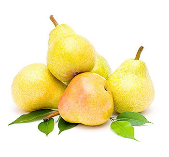

Kruška
Mirisna i sočna kruška daleko je od običnog voća – obilje prirodnih sastojaka s pravom je stavlja na listu najzdravijih namirnica na svijetu. Kruške pripadaju porodici ruža (Rosaceae) i srodne su jabukama i dunjama. S obzirom na to da postoji oko tisuću sorti, razlikujemo ih po veličini, obliku, boji, okusu kao i dužini skladištenja. Dobar su izvor dijetalnih vlakana koja ljekovito djeluju najprije na zdravlje probavnog, a zatim i kardiovaskularnog sustava.
Ubrano